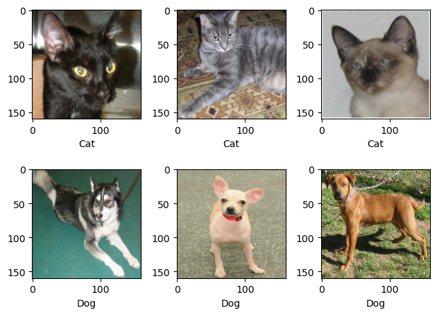

import os
import tensorflow as tf
from tensorflow.keras import utils, layers
import matplotlib.pyplot as plt
import numpy as npImage Classification: Cats and Dogs!
Today we will be learning how to create a machine learning model based on a convolutional neural network that will be able to classify and differentiate between cats and dogs.
First we’ll import what we’ll need
# location of data
_URL = 'https://storage.googleapis.com/mledu-datasets/cats_and_dogs_filtered.zip'
# download the data and extract it
path_to_zip = utils.get_file('cats_and_dogs.zip', origin=_URL, extract=True)
# construct paths
PATH = os.path.join(os.path.dirname(path_to_zip), 'cats_and_dogs_filtered')
train_dir = os.path.join(PATH, 'train')
validation_dir = os.path.join(PATH, 'validation')
# parameters for datasets
BATCH_SIZE = 32
IMG_SIZE = (160, 160)
# construct train and validation datasets
train_dataset = utils.image_dataset_from_directory(train_dir,
shuffle=True,
batch_size=BATCH_SIZE,
image_size=IMG_SIZE)
validation_dataset = utils.image_dataset_from_directory(validation_dir,
shuffle=True,
batch_size=BATCH_SIZE,
image_size=IMG_SIZE)
# construct the test dataset by taking every 5th observation out of the validation dataset
val_batches = tf.data.experimental.cardinality(validation_dataset)
test_dataset = validation_dataset.take(val_batches // 5)
validation_dataset = validation_dataset.skip(val_batches // 5)Found 2000 files belonging to 2 classes.
Found 1000 files belonging to 2 classes.We will use the code below for rapidly reading the data.
AUTOTUNE = tf.data.AUTOTUNE
train_dataset = train_dataset.prefetch(buffer_size=AUTOTUNE)
validation_dataset = validation_dataset.prefetch(buffer_size=AUTOTUNE)
test_dataset = test_dataset.prefetch(buffer_size=AUTOTUNE)for i, j in train_dataset.take(1):
images, labels = i, jcat_indexes = [i for i in range(len(labels)) if labels[i] == 0]
dog_indexes = [i for i in range(len(labels)) if labels[i] == 1]print(cat_indexes)
print(dog_indexes)[4, 8, 11, 12, 15, 18, 21, 26, 30, 31]
[0, 1, 2, 3, 5, 6, 7, 9, 10, 13, 14, 16, 17, 19, 20, 22, 23, 24, 25, 27, 28, 29]cat_indexes = np.random.choice(cat_indexes, 3, replace=False)
dog_indexes = np.random.choice(dog_indexes, 3, replace=False)Let’s see if we can get the images to display
for i in range(3):
plt.subplot(2,3,i+1)
plt.imshow((images[cat_indexes[i]]/255).numpy())
plt.xlabel("Cat")
for i in range(3):
plt.subplot(2,3,i+4)
plt.imshow((images[dog_indexes[i]]/255).numpy())
plt.xlabel("Dog")
plt.tight_layout()Now let’s turn this into a function
def view_samples(images, labels, num_columns):
cat_indexes = [i for i in range(len(labels)) if labels[i] == 0]
dog_indexes = [i for i in range(len(labels)) if labels[i] == 1]
cat_indexes = np.random.choice(cat_indexes, num_columns, replace=False)
dog_indexes = np.random.choice(dog_indexes, num_columns, replace=False)
for i in range(num_columns):
plt.subplot(2,num_columns,i+1)
plt.imshow((images[cat_indexes[i]]/255).numpy())
plt.xlabel("Cat")
for i in range(num_columns):
plt.subplot(2,num_columns,i+1+num_columns)
plt.imshow((images[dog_indexes[i]]/255).numpy())
plt.xlabel("Dog")
plt.tight_layout()view_samples(images, labels, 3)
Our function works! Now let’s check the label frequencies.
labels_iterator= train_dataset.unbatch().map(lambda image, label: label).as_numpy_iterator()cat_count = 0
dog_count = 0
for label in labels_iterator:
if label == 0:
cat_count += 1
elif label == 1:
dog_count += 1cat_count, dog_count(1000, 1000)We see that the number of images of cats is the same as that of dogs. This means that the baseline model would just either randomly choose between cats and dogs, or choose one of them as the majority. Either way, we’d get 50% accuracy.
model1 = tf.keras.Sequential([
layers.Conv2D(32, (3,3), activation="relu", input_shape = (160, 160, 3)),
layers.MaxPooling2D((2,2)),
layers.Conv2D(64, (3,3), activation="relu"),
layers.MaxPooling2D((2,2)),
layers.Flatten(),
layers.Dense(40, activation = "relu"),
layers.Dropout(0.2),
layers.Dense(2)
])model1.compile(optimizer='adam',
loss=tf.keras.losses.SparseCategoricalCrossentropy(from_logits=True),
metrics=['accuracy'])model1.summary()Model: "sequential_21"
_________________________________________________________________
Layer (type) Output Shape Param #
=================================================================
conv2d_38 (Conv2D) (None, 158, 158, 32) 896
max_pooling2d_38 (MaxPooli (None, 79, 79, 32) 0
ng2D)
conv2d_39 (Conv2D) (None, 77, 77, 64) 18496
max_pooling2d_39 (MaxPooli (None, 38, 38, 64) 0
ng2D)
flatten_19 (Flatten) (None, 92416) 0
dense_41 (Dense) (None, 40) 3696680
dropout_11 (Dropout) (None, 40) 0
dense_42 (Dense) (None, 2) 82
=================================================================
Total params: 3716154 (14.18 MB)
Trainable params: 3716154 (14.18 MB)
Non-trainable params: 0 (0.00 Byte)
_________________________________________________________________history1 = model1.fit(train_dataset, validation_data=validation_dataset, epochs=20)Epoch 1/20
63/63 [==============================] - 6s 69ms/step - loss: 45.7836 - accuracy: 0.5740 - val_loss: 0.6681 - val_accuracy: 0.5903
Epoch 2/20
63/63 [==============================] - 3s 51ms/step - loss: 0.5724 - accuracy: 0.7025 - val_loss: 0.7661 - val_accuracy: 0.6139
Epoch 3/20
63/63 [==============================] - 3s 51ms/step - loss: 0.4076 - accuracy: 0.8125 - val_loss: 0.9572 - val_accuracy: 0.6176
Epoch 4/20
63/63 [==============================] - 4s 67ms/step - loss: 0.3079 - accuracy: 0.8725 - val_loss: 1.1746 - val_accuracy: 0.5990
Epoch 5/20
63/63 [==============================] - 4s 63ms/step - loss: 0.1961 - accuracy: 0.9245 - val_loss: 1.2200 - val_accuracy: 0.6287
Epoch 6/20
63/63 [==============================] - 3s 52ms/step - loss: 0.1460 - accuracy: 0.9480 - val_loss: 1.2713 - val_accuracy: 0.6163
Epoch 7/20
63/63 [==============================] - 4s 53ms/step - loss: 0.1249 - accuracy: 0.9605 - val_loss: 1.1999 - val_accuracy: 0.5879
Epoch 8/20
63/63 [==============================] - 5s 79ms/step - loss: 0.1208 - accuracy: 0.9540 - val_loss: 1.2705 - val_accuracy: 0.6250
Epoch 9/20
63/63 [==============================] - 3s 50ms/step - loss: 0.0891 - accuracy: 0.9740 - val_loss: 1.7460 - val_accuracy: 0.6040
Epoch 10/20
63/63 [==============================] - 3s 51ms/step - loss: 0.0682 - accuracy: 0.9765 - val_loss: 1.5511 - val_accuracy: 0.6089
Epoch 11/20
63/63 [==============================] - 4s 61ms/step - loss: 0.0941 - accuracy: 0.9675 - val_loss: 1.2757 - val_accuracy: 0.5879
Epoch 12/20
63/63 [==============================] - 4s 52ms/step - loss: 0.0685 - accuracy: 0.9785 - val_loss: 2.0207 - val_accuracy: 0.6002
Epoch 13/20
63/63 [==============================] - 3s 50ms/step - loss: 0.0771 - accuracy: 0.9770 - val_loss: 1.3295 - val_accuracy: 0.6312
Epoch 14/20
63/63 [==============================] - 5s 80ms/step - loss: 0.0585 - accuracy: 0.9815 - val_loss: 1.5487 - val_accuracy: 0.6386
Epoch 15/20
63/63 [==============================] - 3s 50ms/step - loss: 0.0478 - accuracy: 0.9870 - val_loss: 1.8362 - val_accuracy: 0.6064
Epoch 16/20
63/63 [==============================] - 3s 52ms/step - loss: 0.0360 - accuracy: 0.9880 - val_loss: 1.9736 - val_accuracy: 0.6188
Epoch 17/20
63/63 [==============================] - 6s 95ms/step - loss: 0.0627 - accuracy: 0.9855 - val_loss: 1.7215 - val_accuracy: 0.6027
Epoch 18/20
63/63 [==============================] - 3s 50ms/step - loss: 0.0526 - accuracy: 0.9830 - val_loss: 1.6026 - val_accuracy: 0.5879
Epoch 19/20
63/63 [==============================] - 5s 73ms/step - loss: 0.0526 - accuracy: 0.9850 - val_loss: 2.0568 - val_accuracy: 0.6114
Epoch 20/20
63/63 [==============================] - 5s 74ms/step - loss: 0.0400 - accuracy: 0.9855 - val_loss: 1.7724 - val_accuracy: 0.6040plt.plot(history1.history["accuracy"], label = "training accuracy")
plt.plot(history1.history["val_accuracy"], label = "validation accuracy")
plt.legend()
plt.show()Looking at the graph, we can see that the validation accuracy stabilized at around 60% during training. However, when we look at the training accuracy, it goes all the way up to around 1.0. Because of this large disparity, we see that there’s massive overfitting. Now let’s see if we can fix this by artificially increasing the size of the data. We will do this by using data augmentation layers. To increase our data size, we will perform different alterations to the images by doing this like flipping the pictures, turning them upside down, etc.
First of all, let’s visualize how the RandomFlip layer works. This will randomly choose between flipping over the x and y axis. In this case, we can see that the picture is being flipped vertically.
plt.imshow((images[1]/255).numpy())
plt.show()fliplayer = layers.RandomFlip()
flipped_image = fliplayer(images[1])
plt.imshow((flipped_image/255).numpy())
plt.show()Now let’s visualize the RandomRotation. We want to rotate by 90 degrees, so we’ll use a factor of 0.25. This is because in the documentation it says that the factor is multipled by 2π, which would create a range of (-π/2, π/2). We see below that the image got rotated.
rotatelayer = layers.RandomRotation(factor=0.25)
rotated_image = rotatelayer(images[1])
plt.imshow((rotated_image/255).numpy())
plt.show()model2 = tf.keras.Sequential([
layers.RandomRotation(factor=0.25,input_shape=(160, 160, 3)),
layers.RandomFlip(),
layers.Conv2D(32, (3,3), activation="relu"),
layers.MaxPooling2D((2,2)),
layers.Conv2D(64, (3,3), activation="relu"),
layers.MaxPooling2D((2,2)),
layers.Flatten(),
layers.Dense(40, activation = "relu"),
layers.Dropout(0.2),
layers.Dense(2)
])model2.compile(optimizer='adam',
loss=tf.keras.losses.SparseCategoricalCrossentropy(from_logits=True),
metrics=['accuracy'])model2.summary()Model: "sequential_12"
_________________________________________________________________
Layer (type) Output Shape Param #
=================================================================
random_rotation_18 (Random (None, 160, 160, 3) 0
Rotation)
random_flip_12 (RandomFlip (None, 160, 160, 3) 0
)
conv2d_20 (Conv2D) (None, 158, 158, 32) 896
max_pooling2d_20 (MaxPooli (None, 79, 79, 32) 0
ng2D)
conv2d_21 (Conv2D) (None, 77, 77, 64) 18496
max_pooling2d_21 (MaxPooli (None, 38, 38, 64) 0
ng2D)
flatten_10 (Flatten) (None, 92416) 0
dense_23 (Dense) (None, 40) 3696680
dropout_3 (Dropout) (None, 40) 0
dense_24 (Dense) (None, 2) 82
=================================================================
Total params: 3716154 (14.18 MB)
Trainable params: 3716154 (14.18 MB)
Non-trainable params: 0 (0.00 Byte)
_________________________________________________________________history2 = model2.fit(train_dataset, validation_data=validation_dataset, epochs=20)Epoch 1/20
63/63 [==============================] - 5s 51ms/step - loss: 61.7950 - accuracy: 0.4925 - val_loss: 0.6943 - val_accuracy: 0.5062
Epoch 2/20
63/63 [==============================] - 6s 88ms/step - loss: 0.6926 - accuracy: 0.5150 - val_loss: 0.6910 - val_accuracy: 0.5891
Epoch 3/20
63/63 [==============================] - 4s 52ms/step - loss: 0.6897 - accuracy: 0.5320 - val_loss: 0.6904 - val_accuracy: 0.5866
Epoch 4/20
63/63 [==============================] - 3s 51ms/step - loss: 0.6838 - accuracy: 0.5695 - val_loss: 0.6719 - val_accuracy: 0.6077
Epoch 5/20
63/63 [==============================] - 5s 77ms/step - loss: 0.6724 - accuracy: 0.5630 - val_loss: 0.6719 - val_accuracy: 0.6015
Epoch 6/20
63/63 [==============================] - 4s 51ms/step - loss: 0.6672 - accuracy: 0.5705 - val_loss: 0.6509 - val_accuracy: 0.6287
Epoch 7/20
63/63 [==============================] - 4s 52ms/step - loss: 0.6578 - accuracy: 0.5840 - val_loss: 0.6449 - val_accuracy: 0.6361
Epoch 8/20
63/63 [==============================] - 5s 72ms/step - loss: 0.6497 - accuracy: 0.6030 - val_loss: 0.6508 - val_accuracy: 0.6547
Epoch 9/20
63/63 [==============================] - 4s 51ms/step - loss: 0.6565 - accuracy: 0.5995 - val_loss: 0.6228 - val_accuracy: 0.6287
Epoch 10/20
63/63 [==============================] - 3s 52ms/step - loss: 0.6421 - accuracy: 0.6120 - val_loss: 0.6256 - val_accuracy: 0.6436
Epoch 11/20
63/63 [==============================] - 6s 90ms/step - loss: 0.6590 - accuracy: 0.6090 - val_loss: 0.6232 - val_accuracy: 0.6386
Epoch 12/20
63/63 [==============================] - 3s 52ms/step - loss: 0.6414 - accuracy: 0.6155 - val_loss: 0.6249 - val_accuracy: 0.6262
Epoch 13/20
63/63 [==============================] - 3s 52ms/step - loss: 0.6405 - accuracy: 0.6240 - val_loss: 0.6187 - val_accuracy: 0.6448
Epoch 14/20
63/63 [==============================] - 5s 80ms/step - loss: 0.6354 - accuracy: 0.6200 - val_loss: 0.6141 - val_accuracy: 0.6584
Epoch 15/20
63/63 [==============================] - 6s 90ms/step - loss: 0.6373 - accuracy: 0.6165 - val_loss: 0.6264 - val_accuracy: 0.6238
Epoch 16/20
63/63 [==============================] - 4s 63ms/step - loss: 0.6423 - accuracy: 0.6125 - val_loss: 0.6256 - val_accuracy: 0.6411
Epoch 17/20
63/63 [==============================] - 3s 51ms/step - loss: 0.6159 - accuracy: 0.6400 - val_loss: 0.6367 - val_accuracy: 0.6423
Epoch 18/20
63/63 [==============================] - 3s 52ms/step - loss: 0.6318 - accuracy: 0.6260 - val_loss: 0.6216 - val_accuracy: 0.6411
Epoch 19/20
63/63 [==============================] - 6s 93ms/step - loss: 0.6224 - accuracy: 0.6335 - val_loss: 0.6307 - val_accuracy: 0.6324
Epoch 20/20
63/63 [==============================] - 3s 51ms/step - loss: 0.6214 - accuracy: 0.6355 - val_loss: 0.6326 - val_accuracy: 0.6572plt.plot(history2.history["accuracy"], label = "training accuracy")
plt.plot(history2.history["val_accuracy"], label = "validation accuracy")
plt.legend()
plt.show()Our validation accuracy ends up converging to the range of 62.5% - 65%, which is a little bit better than our first model. We can see that the difference between training and validation accuracy is much lower than before, and there is very little overfitting compared to the first model.
i = tf.keras.Input(shape=(160, 160, 3))
x = tf.keras.applications.mobilenet_v2.preprocess_input(i)
preprocessor = tf.keras.Model(inputs = [i], outputs = [x])model3 = tf.keras.Sequential([
preprocessor,
layers.RandomRotation(factor=0.25),
layers.RandomFlip(),
layers.Conv2D(32, (3,3), activation="relu"),
layers.MaxPooling2D((2,2)),
layers.Conv2D(64, (3,3), activation="relu"),
layers.MaxPooling2D((2,2)),
layers.Flatten(),
layers.Dense(40, activation = "relu"),
layers.Dropout(0.2),
layers.Dense(2)
])model3.compile(optimizer='adam',
loss=tf.keras.losses.SparseCategoricalCrossentropy(from_logits=True),
metrics=['accuracy'])model3.summary()Model: "sequential_18"
_________________________________________________________________
Layer (type) Output Shape Param #
=================================================================
model_4 (Functional) (None, 160, 160, 3) 0
random_rotation_24 (Random (None, 160, 160, 3) 0
Rotation)
random_flip_18 (RandomFlip (None, 160, 160, 3) 0
)
conv2d_32 (Conv2D) (None, 158, 158, 32) 896
max_pooling2d_32 (MaxPooli (None, 79, 79, 32) 0
ng2D)
conv2d_33 (Conv2D) (None, 77, 77, 64) 18496
max_pooling2d_33 (MaxPooli (None, 38, 38, 64) 0
ng2D)
flatten_16 (Flatten) (None, 92416) 0
dense_35 (Dense) (None, 40) 3696680
dropout_9 (Dropout) (None, 40) 0
dense_36 (Dense) (None, 2) 82
=================================================================
Total params: 3716154 (14.18 MB)
Trainable params: 3716154 (14.18 MB)
Non-trainable params: 0 (0.00 Byte)
_________________________________________________________________history3 = model3.fit(train_dataset, validation_data=validation_dataset, epochs=20)Epoch 1/20
63/63 [==============================] - 5s 58ms/step - loss: 0.8717 - accuracy: 0.5420 - val_loss: 0.6557 - val_accuracy: 0.5965
Epoch 2/20
63/63 [==============================] - 4s 57ms/step - loss: 0.6655 - accuracy: 0.5885 - val_loss: 0.6454 - val_accuracy: 0.6052
Epoch 3/20
63/63 [==============================] - 5s 74ms/step - loss: 0.6444 - accuracy: 0.5940 - val_loss: 0.6425 - val_accuracy: 0.6077
Epoch 4/20
63/63 [==============================] - 3s 52ms/step - loss: 0.6344 - accuracy: 0.6380 - val_loss: 0.6038 - val_accuracy: 0.6547
Epoch 5/20
63/63 [==============================] - 4s 53ms/step - loss: 0.6170 - accuracy: 0.6525 - val_loss: 0.5927 - val_accuracy: 0.6856
Epoch 6/20
63/63 [==============================] - 5s 70ms/step - loss: 0.6051 - accuracy: 0.6540 - val_loss: 0.6616 - val_accuracy: 0.6621
Epoch 7/20
63/63 [==============================] - 4s 52ms/step - loss: 0.6011 - accuracy: 0.6745 - val_loss: 0.6238 - val_accuracy: 0.6658
Epoch 8/20
63/63 [==============================] - 3s 52ms/step - loss: 0.6097 - accuracy: 0.6610 - val_loss: 0.6003 - val_accuracy: 0.6559
Epoch 9/20
63/63 [==============================] - 4s 55ms/step - loss: 0.5834 - accuracy: 0.6920 - val_loss: 0.5905 - val_accuracy: 0.6807
Epoch 10/20
63/63 [==============================] - 4s 53ms/step - loss: 0.5892 - accuracy: 0.6935 - val_loss: 0.5769 - val_accuracy: 0.6906
Epoch 11/20
63/63 [==============================] - 4s 53ms/step - loss: 0.5660 - accuracy: 0.6965 - val_loss: 0.5648 - val_accuracy: 0.6931
Epoch 12/20
63/63 [==============================] - 3s 53ms/step - loss: 0.5672 - accuracy: 0.7020 - val_loss: 0.5511 - val_accuracy: 0.7017
Epoch 13/20
63/63 [==============================] - 4s 60ms/step - loss: 0.5651 - accuracy: 0.7010 - val_loss: 0.5726 - val_accuracy: 0.6980
Epoch 14/20
63/63 [==============================] - 3s 51ms/step - loss: 0.5715 - accuracy: 0.7045 - val_loss: 0.5490 - val_accuracy: 0.7129
Epoch 15/20
63/63 [==============================] - 6s 89ms/step - loss: 0.5455 - accuracy: 0.7140 - val_loss: 0.6160 - val_accuracy: 0.6931
Epoch 16/20
63/63 [==============================] - 3s 51ms/step - loss: 0.5393 - accuracy: 0.7215 - val_loss: 0.5626 - val_accuracy: 0.7141
Epoch 17/20
63/63 [==============================] - 3s 51ms/step - loss: 0.5478 - accuracy: 0.7205 - val_loss: 0.5428 - val_accuracy: 0.7401
Epoch 18/20
63/63 [==============================] - 6s 94ms/step - loss: 0.5389 - accuracy: 0.7245 - val_loss: 0.5884 - val_accuracy: 0.6918
Epoch 19/20
63/63 [==============================] - 4s 53ms/step - loss: 0.5524 - accuracy: 0.7230 - val_loss: 0.5342 - val_accuracy: 0.7203
Epoch 20/20
63/63 [==============================] - 5s 74ms/step - loss: 0.5343 - accuracy: 0.7320 - val_loss: 0.5543 - val_accuracy: 0.7178plt.plot(history3.history["accuracy"], label = "training accuracy")
plt.plot(history3.history["val_accuracy"], label = "validation accuracy")
plt.legend()
plt.show()A much better performance! Looks like the model stabilized at around 70% validation accuracy. There’s even less overfitting in this model than the last one, which is really good.
We will now try using transfer learning, which is where we take an existing model and use it for our task. We’ll be using the MobileNetV2 model and use it to train our model. For background the MobileNetV2 model is a convolutional neural network that is 53 layers deep. That’s a lot of layers, especially considering ours is less than 5! This model is trained on more than a million images and can classify many object categories. If we can harness the power of this model, we can surely achieve great results.
IMG_SHAPE = IMG_SIZE + (3,)
base_model = tf.keras.applications.MobileNetV2(input_shape=IMG_SHAPE,
include_top=False,
weights='imagenet')
base_model.trainable = False
i = tf.keras.Input(shape=IMG_SHAPE)
x = base_model(i, training = False)
base_model_layer = tf.keras.Model(inputs = [i], outputs = [x])model4 = tf.keras.Sequential([
preprocessor,
layers.RandomRotation(factor=0.25),
layers.RandomFlip(),
base_model_layer,
layers.Flatten(),
layers.Dropout(0.2),
layers.Dense(2)
])model4.compile(optimizer='adam',
loss=tf.keras.losses.SparseCategoricalCrossentropy(from_logits=True),
metrics=['accuracy'])model4.summary()Model: "sequential_27"
_________________________________________________________________
Layer (type) Output Shape Param #
=================================================================
model_4 (Functional) (None, 160, 160, 3) 0
random_rotation_30 (Random (None, 160, 160, 3) 0
Rotation)
random_flip_24 (RandomFlip (None, 160, 160, 3) 0
)
model_5 (Functional) (None, 5, 5, 1280) 2257984
flatten_21 (Flatten) (None, 32000) 0
dropout_16 (Dropout) (None, 32000) 0
dense_49 (Dense) (None, 2) 64002
=================================================================
Total params: 2321986 (8.86 MB)
Trainable params: 64002 (250.01 KB)
Non-trainable params: 2257984 (8.61 MB)
_________________________________________________________________history4 = model4.fit(train_dataset, validation_data=(validation_dataset), epochs=20)Epoch 1/20
63/63 [==============================] - 9s 96ms/step - loss: 0.8361 - accuracy: 0.8565 - val_loss: 0.0813 - val_accuracy: 0.9814
Epoch 2/20
63/63 [==============================] - 4s 58ms/step - loss: 0.6559 - accuracy: 0.9110 - val_loss: 0.5218 - val_accuracy: 0.9431
Epoch 3/20
63/63 [==============================] - 4s 58ms/step - loss: 0.6952 - accuracy: 0.9125 - val_loss: 0.2417 - val_accuracy: 0.9678
Epoch 4/20
63/63 [==============================] - 6s 90ms/step - loss: 0.7077 - accuracy: 0.9145 - val_loss: 0.0961 - val_accuracy: 0.9802
Epoch 5/20
63/63 [==============================] - 5s 74ms/step - loss: 0.6416 - accuracy: 0.9230 - val_loss: 0.1971 - val_accuracy: 0.9715
Epoch 6/20
63/63 [==============================] - 4s 57ms/step - loss: 0.7348 - accuracy: 0.9225 - val_loss: 0.1911 - val_accuracy: 0.9666
Epoch 7/20
63/63 [==============================] - 6s 86ms/step - loss: 0.6548 - accuracy: 0.9235 - val_loss: 0.2055 - val_accuracy: 0.9616
Epoch 8/20
63/63 [==============================] - 4s 57ms/step - loss: 0.5608 - accuracy: 0.9310 - val_loss: 0.3155 - val_accuracy: 0.9666
Epoch 9/20
63/63 [==============================] - 4s 59ms/step - loss: 0.6772 - accuracy: 0.9270 - val_loss: 0.3506 - val_accuracy: 0.9604
Epoch 10/20
63/63 [==============================] - 5s 67ms/step - loss: 0.5516 - accuracy: 0.9385 - val_loss: 0.3042 - val_accuracy: 0.9666
Epoch 11/20
63/63 [==============================] - 5s 81ms/step - loss: 0.6044 - accuracy: 0.9380 - val_loss: 0.3164 - val_accuracy: 0.9765
Epoch 12/20
63/63 [==============================] - 4s 56ms/step - loss: 0.5933 - accuracy: 0.9320 - val_loss: 0.2754 - val_accuracy: 0.9629
Epoch 13/20
63/63 [==============================] - 4s 58ms/step - loss: 0.5933 - accuracy: 0.9405 - val_loss: 0.3501 - val_accuracy: 0.9554
Epoch 14/20
63/63 [==============================] - 5s 78ms/step - loss: 0.6720 - accuracy: 0.9375 - val_loss: 0.2814 - val_accuracy: 0.9715
Epoch 15/20
63/63 [==============================] - 4s 59ms/step - loss: 0.5990 - accuracy: 0.9440 - val_loss: 0.4147 - val_accuracy: 0.9678
Epoch 16/20
63/63 [==============================] - 4s 57ms/step - loss: 0.5712 - accuracy: 0.9415 - val_loss: 0.4248 - val_accuracy: 0.9715
Epoch 17/20
63/63 [==============================] - 5s 80ms/step - loss: 0.6546 - accuracy: 0.9430 - val_loss: 0.5180 - val_accuracy: 0.9653
Epoch 18/20
63/63 [==============================] - 4s 58ms/step - loss: 0.5932 - accuracy: 0.9500 - val_loss: 0.3976 - val_accuracy: 0.9629
Epoch 19/20
63/63 [==============================] - 4s 66ms/step - loss: 0.6165 - accuracy: 0.9395 - val_loss: 0.4452 - val_accuracy: 0.9554
Epoch 20/20
63/63 [==============================] - 5s 79ms/step - loss: 0.6156 - accuracy: 0.9380 - val_loss: 0.3415 - val_accuracy: 0.9728plt.plot(history4.history["accuracy"], label = "training accuracy")
plt.plot(history4.history["val_accuracy"], label = "validation accuracy")
plt.legend()
plt.show()This is amazing performance! We can see that the validation accuracy is consistently higher than 95% in the later epochs, and using transfer learning was by far the best method to use. We see that the validation is actually higher than the training accuracy, so there is no evidence of overfitting here which is great news!
To truly check how well our best model is doing, we will test this against unseen test data. We will use the evaluate method on the dataset to see how well the transfer learning model did.
model4.evaluate(test_dataset)6/6 [==============================] - 1s 60ms/step - loss: 0.5277 - accuracy: 0.9479[0.5276554226875305, 0.9479166865348816]We got a 94.8%! That’s a really great score and we should be very happy with the performance of this model.